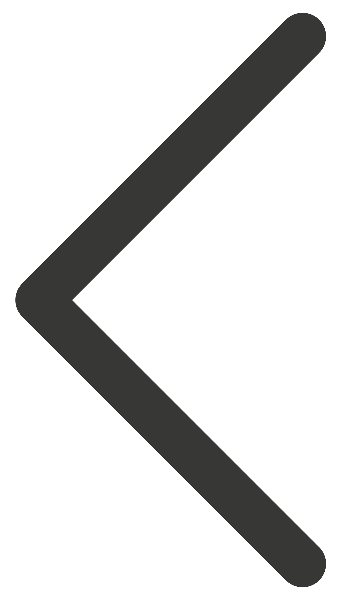

scrutin direct : scrutin où les citoyens sont amenés à voter.scrutin indirect : scrutin où des représentants des citoyens sont amenés à voter.
scrutin uninominal : scrutin où l’électeur est invité à voter pour un seul nom.scrutin plurinominal : scrutin où l’électeur est invité à voter pour plusieurs noms à la fois, appelé également scrutin de liste.
scrutin proportionnel : scrutin qui répartit les sièges entre les partis (lises) proportionnellement au nombre de suffrages qu'ils ont recueillis.scrutin majoritaire : scrutin où c’est le ou les candidats qui ont obtenu la majorité des suffrages qui sont élu.
souveraineté : ensemble des pouvoirs de l’État.suffrage : a. votes émis.
b. système selon lequel est donné ou refusé le droit de vote.
suffrage restreint : suffrage ouvert sous conditions. ex : le suffrage censitaire est conditionné par la fortune et le suffrage capacitaire par les capacités intellectuelles.suffrage universel : (par opposition au suffrage restreint) suffrage ouvert à tous, sans conditions requises de fortune ou de capacités par exemple. Le suffrage universel peut tout de même impliquer certaines exclusions comme l’âge ou la mise sous tutelle. 